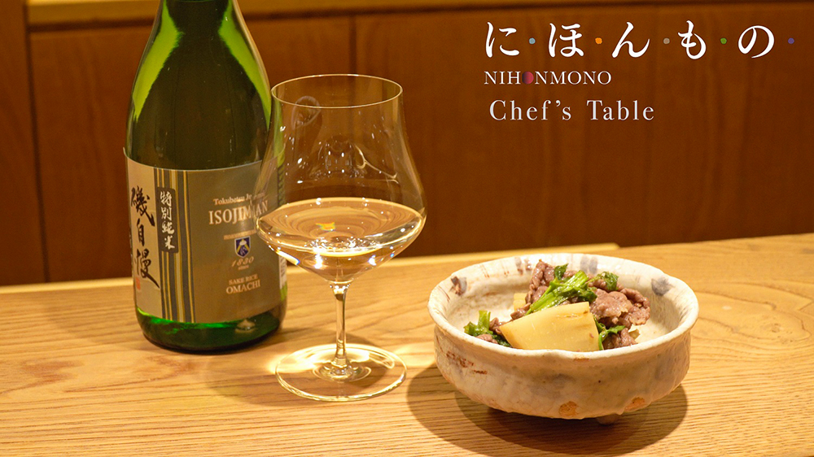
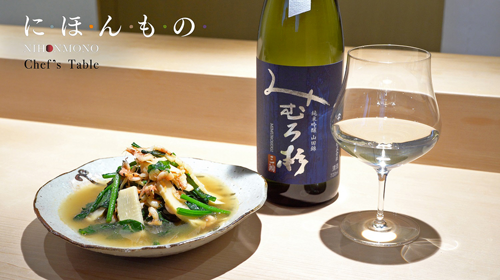

掲載日：5月8日（金）
中田英寿が語る、酒とシェフがつなげる新しい将来
5月1日「気が滅入った時でも、このチャンネルを見れば少し元気になれる」、そんなニュースを届けるために立ち上がったグノシーの新チャンネル「コロナアクション」。今回は中田英寿さんが、5月5日J-WAVE（81.3FM）で放送された「J-WAVE HOLIDAY SPECIAL CHEERS FOR ALL」でナビゲーターの堀潤さんとのインタビューで語った、今だから始めた新しい取り組みについて紹介させていただきます。
心が折れるかもしれない日本の酒づくり
「これだけ飲食が止まってしまうと、お店がテイクアウトに切り替えても、お酒は売れない。」そう語る中田さんは現在、日本全国の蔵元や陶芸家へ一軒一軒に聞き取りを行っているとのこと。“予定より早く酒造りを止める” “来年の米づくりはどうすればいいのか”などの混乱をはじめ、百貨店、飲食店での取り扱いができないので商品が売れず「本当に辞めてしまう人が出てきてしまうのではないか」と不安を口にしました。
「本当は、酒は人と人とをつなげる力がある。」
「でも、今はつながってはいけない、ちょっとむずかしい時期。」
そんな中、中田さんが始めた新たな取り組みとは－。
酒とシェフが自宅の料理と生産者をつなぐ－にほんもの Chef’s Table
「食事をするとき、レストランのテイクアウトは種類もたくさんあるものの、家庭で料理をするときの動画レシピは、結構レパートリーが決まってきてるのではないか？」と中田さん。
中田さんが中心となるCRAFT SAKE WEEKなどいろんなシェフとのつながりから、素晴らしいシェフたちの“家庭でできる”動画レシピ「にほんもの Chef’s Table」の提供を始めた。
サイトや動画には、シェフが使う道具や調味料、食材などの紹介もされており、いつもの家庭料理とは違ったステイホームを楽しめるようにできている。さらに、シェフたちが紹介する家庭料理に合う日本酒や食材を紹介することで生産者をつなぐこともできる。
すでに掲載が始まっており、神楽坂にある三ツ星レストランの「石かわ」「虎白」、第三弾はCRAFT SAKE WEEKにも出店している「ペレグリーノ」のなど人気レストランが名を連ねているというので心が踊る。
料理の“技、思い、文化”をシェフたちが、料理として生産者と僕たちをつなげてくれる役割を果たしてくれているのではないか。
－「にほんもの Chef’s Table」が今だからこそ苦境に立たされる生産者と私たち生活者をつなげてくれる新しい取り組みになることを実感しました。
-
「石かわ」×奈良県の銘酒「みむろ杉」 - 
「虎白」×静岡県の銘酒「磯自慢 特別純米」
「e-tasting」会えない生産者のモノ・キモチを届ける、将来へのチャレンジ
中田さんは、新しく出来た高輪ゲートウェイ駅でJ-WAVE NIHONMONO LOUNGEという大々的なイベントを予定していましたが、現在の状況を踏まえ、新しい取り組みとして「どうやって会えない生産者のモノ・キモチを届けられるかのチャレンジ」をしているとのこと。
オンラインツールZOOMを使って、蔵元が直接オンラインで日本酒の味や歴史を教えてくれる”e tasting”。さらに参加者には事前にその蔵のお酒が手元に送られてくる仕組み。第一弾は、CRAFT SAKE WEEKでも長蛇の列ができる「十四代」。第二弾は5月16日「而今（じこん）」。この先にも人気の蔵元が登場する予定。
中田さんはこの仕組みに「将来をつくる新しい販売ルート」の可能性を感じたそうです。
－モノというのは情報と一緒に伝わって初めて意味がある。この取り組みを“蔵元が直接やってくれる機会ができる”ということは、この先の新しい仕組みになっていくと感じる。
コロナが起こったことで一気に進んだけれど、コロナとは関係なく農業や工芸、日本酒の業界など一次産業の中では一番必要だったこと。これをきっかけに将来を作っていってほしい
逆境の中でも立ち上がり続けるヒント
最後に中田さんから、「今、立ち往生して先行きを見通せず、何をしたらいいのか不安な方、コロナの先に疲れ果てた世界があることが心配など、様々な逆境の中で立ち上がり続けるためのヒント」を語っていただきました。
－中田さん
遠くの先を見ると頑張りきれないことはある。だけど目の前のことだけ見てても悩んでしまう。
何が重要かというと、自分にできることを一つ一つ集中してやっていくこと。
不安を考える時間を与えないぐらいやれることたくさんやっていくこと。
やれないこともたくさんある、でもやれることも実はたくさんある。
諦めずにやれることを集中してやっていくことが大切。
番組で紹介した人気の日本酒やレストラン
「J-WAVE HOLIDAY SPECIAL CHEERS FOR ALL」において、ミュージックシェア&メッセージをいただいた方から抽選でプレゼントされた、J-WAVE NIHONMONO LOUNGEで提供される予定の日本酒や番組内で紹介されたレストランをご紹介いたします。